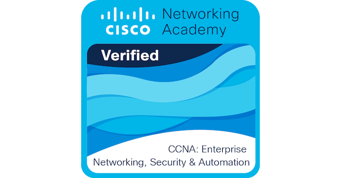
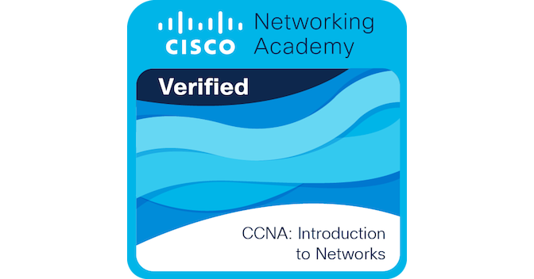

Hi, I'm Nadit Rabab
Shah Pranzol
Computer Science & Engineering graduate with 1 year of hands-on experience in Junior Broadcast Engineering (IT) at Independent Television Limited and enterprise IT systems. Certified in MikroTik (MTCNA, MTCRE, MTCSE) and extensively trained in Cisco Routing, Switching & Security. Passionate about 24/7 mission-critical uptime, network infrastructure, server virtualization, and security hardening.
Dedicated to Reliable IT Systems & Modern Networks
A blend of academic Computer Science foundation and high-pressure, live broadcast engineering excellence.
I am an enthusiastic, analytical, and quick-learning professional with foundational and applied skills in Network Engineering, Server Administration, and Broadcast IT Systems. Graduating with a Bachelor of Science in Computer Science & Engineering, I bridge theoretical software principles with real-world infrastructure stability.
Currently serving as a Junior Broadcast Engineer (IT) at Independent Television Limited, one of Bangladesh's premier 24/7 news channels, I maintain mission-critical transmission servers, troubleshoot real-time hardware/software faults, and optimize network flow so on-air programming runs without interruption.
Complementing my broadcast engineering role, my background includes an operations and IT internship at Southeast Bank Limited, reinforcing my capabilities in database administration, audit documentation, compliance, and client service.
Candidate Snapshot
Professional Experience
Demonstrated history of ensuring zero-downtime broadcast systems, resolving complex IT issues, and managing enterprise operations.
Junior Broadcast Engineer (IT)
Responsible for corporate IT support, server architecture maintenance, on-air broadcast automation, and enterprise network infrastructure in a high-intensity, live national television environment.
- 24/7 Mission-Critical Systems: Performed server deployment, routine maintenance, operating system hardening, and continuous troubleshooting for live on-air broadcast automation systems.
- Rapid Incident Response: Diagnosed and resolved hardware, software, and routing/switching network bottlenecks with immediate response times to minimize on-air broadcast interruptions.
- Corporate IT Support: Delivered timely Tier-1 & Tier-2 enterprise IT support for internal staff across multiple departments, resolving workstation, peripheral, and network connectivity issues.
- Broadcast Data & Automation: Managed real-time broadcast media data streams and provided operational support for building automation systems, including enterprise PABX telephony.
- ICT & Network Engineering: Conducted 8+ months of intensive ICT training and hands-on network engineering optimizations across campus infrastructure.
Operations & IT Intern
Completed an intensive general banking and operations internship, bridging client service, database entry, financial documentation, and internal audit compliance.
- Customer Technical Assistance: Communicated and served at the front desk, addressing customer queries, account verification requests, and digital banking inquiries.
- Database Management: Accurately registered and entered customer identification, account records, and confidential operational details into the central banking database.
- Audit & Books Reconciliation: Maintained daily transaction logbooks; collaborated directly with audit teams to examine historical account ledgers and resolve documentation discrepancies.
- Compliance & Operational Processes: Maintained strict adherence to financial regulatory standards, security protocols, and institutional confidentiality practices.
Core Skills & Competencies
A balanced toolkit spanning enterprise routing, broadcast server infrastructure, cybersecurity, and corporate IT operations.
Cisco Routing & Switching
Configuration of switches, routers, VLANs, trunking, inter-VLAN routing, and redundancy protocols.
MikroTik RouterOS
Certified across MTCNA, MTCRE, and MTCSE. Routing protocols, dynamic routing, traffic queuing, and NAT.
Broadcast IT Systems
24/7 on-air transmission server maintenance, media streaming automation, building automation & PABX telephony.
Hardware & OS Diagnostics
Rapid diagnosis of server component faults, workstation hardware, network interfaces, and operating system recovery.
Network Services & VMs
Setup and administration of DNS, DHCP, RADIUS authentication, Caching Proxy, SMTP, FTP, and TFTP in VM environments.
Cybersecurity & FIM
File Integrity Monitoring (FIM) with cryptographic hashing (SHA-256, MD5), access control lists, and security audits.
Corporate IT Support
Enterprise user assistance, SLA compliance, issue ticketing, software deployment, and end-user onboarding.
Database & Audit Operations
User database data entry, account book reconciliation, audit documentation, and financial record compliance.
Industry Certifications
Verified professional credentials from MikroTik (via Amber IT) and Cisco Networking Academy.
MTCNA
Validates core mastery of RouterOS, firewall filtering, NAT configuration, DHCP setup, bandwidth management, wireless access points, and network troubleshooting.
MTCRE
Specialized in advanced routing topologies: static routing, dynamic routing protocols, OSPF implementation, point-to-point addressing, and multi-interface policy routing.
MTCSE
Focuses on RouterOS security hardening: threat mitigation, defense against DoS/DDoS, packet filter security, IPsec tunnels, TLS/SSL, and infrastructure attack surface minimization.

CCNA: Enterprise Networking
Certifies expertise in scalable enterprise networks, dynamic routing architectures, network security standards, WAN technologies, network virtualization, and automation scripting.
CCNA: Switching & Routing
Covers switching architectures, VLAN segmentation, WLAN controllers, First Hop Redundancy Protocols (FHRP), spanning-tree optimization, and problem resolution.

CCNA: Intro to Networks
Foundational proficiency in IPv4/IPv6 addressing schemes, subnetting, Ethernet architecture, transport layer protocols (TCP/UDP), and base router/switch configuration.
Featured Technical Projects
Real-world implementations in virtualized enterprise server defense and automated cybersecurity monitoring.
Server Configuration for Enhanced Network Security & Performance
Architected and deployed a multi-tier server infrastructure inside a virtual machine (VM) environment. Engineered robust network defenses and optimized latency across internal services.
- Configured and hardened DNS, DHCP, RADIUS authentication, caching Proxy, SMTP, and secure FTP/TFTP servers.
- Established access control boundaries (ACLs) and centralized user verification protocols to prevent unauthorized access.
- Implemented performance optimization and traffic shaping to guarantee throughput under high load.
File Integrity Monitoring (FIM) Module with Advanced Hashing
Designed and developed a security module implementing cryptographic hashing algorithms to detect unauthorized file alterations, ransomware attacks, and administrative tampering in real-time.
- Integrated advanced cryptographic digests (SHA-256 and MD5) to establish trusted baseline signatures for critical files.
- Developed real-time alerting mechanics that notify system administrators instantly whenever a hash mismatch or file mutation is detected.
- Significantly elevated system compliance and operational integrity across sensitive directories.
Education & Qualifications
Solid technical foundation in Computer Science and scientific principles from prestigious institutions.
Bachelor of Science (B.Sc.)
4-Year Engineering program covering computer networks, operating systems, data communications, algorithms, software engineering, and systems security.
Higher Secondary Certificate (HSC)
Higher secondary education specializing in Physics, Mathematics, Chemistry, and Information Technology.
Secondary School Certificate (SSC)
Secondary education focusing on core sciences, advanced mathematics, and foundational computer studies.
Official Resume & CV
Standard 1-page professional resume formatted for technical screening, ATS compliance, and fast review. View online or download directly.
Interactive Terminal Console
Simulate real-time queries and network checks directly from Nadit's virtual diagnostic console.
Get In Touch
Interested in discussing broadcast IT engineering, enterprise networking, or potential career opportunities? Let's connect!
Primary Email
naditpranzol@gmail.comSecondary Email
naditshah6516@gmail.comPrimary Phone
+880 1852-365432Secondary Phone
+880 1983-553353Location
Niketan, Niketan Bazar Road, Dhaka 1212, Bangladesh
LinkedIn Professional Profile
linkedin.com/in/nadit-pranzolPortfolio Mirror
naditpranzol.vercel.appSend a Message
Feel free to reach out for broadcast engineering consulting, enterprise IT inquiries, or networking project collaborations.